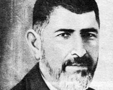

Babanzâde Ahmed Naim (1872-1934)

Osmanlýnýn son ve çalkantýlý döneminde yaþamýþ, önemli fikir adamlarýmýzdan olup, ayný zamanda müderris ve mütercim olarak hizmet görmüþtür. Süleymaniye kökenli Babanlar veya Babanzâdeler olarak bilinen aileye mensuptur. Babanzâde Ahmet Naim olarak tanýnýp meþhur olmuþtur. II. Meþrutiyet döneminde had safhaya ulaþan fikri mücadelelere katýlmýþ, neþir yoluyla Ýslam’a hizmet etmeye çalýþmýþtýr. Ömrü boyunca çok saðlam bir karakter örneði sergilemiþ ve samimi bir dindar olarak tanýnmýþtýr. Vefatý da namazda ve secdede bulunduðu sýrada vuku bulmuþtur. Birkaç dil bilen, Doðu ve Batý kültürüne aþina, önemli bir ilmi birikime sahip olmasýna raðmen hiçbir zaman kibirlenmemiþ ve mütevazý kiþiliðini hep muhafaza etmiþtir.Mehmet Akif, Ömer Ferit Kam, Ý. Hakký Ýzmirli gibi ünlü simalarýn katýldýðý ve sýk sýk toplanan fikir meclislerinde Bediüzzaman’ýn sohbet arkadaþlarý arasýnda yer almýþtýr. Risale-i Nur’da ismi, söz konusu sohbetlere katýlýp Bediüzzaman’la “tatlý tatlý” müzakerelerde bulunan Naim’ler olarak geçmektedir.
Ahmed Naim, Babanzâde Mustafa Zihni Paþa’nýn oðlu olarak 1872 yýlýnda Baðdat’ta doðdu. Ýlk eðitimini burada gördü. Baðdat Rüþtiyesini bitirdikten sonra Ýstanbul’a gelerek Galatasaray Sultanisi’nde (Lisesi) okumaya baþladý. Bu okuldan sonra Mülkiye Mektebine devam etti. Ýlk memuriyetine Hariciye Nezareti Türcüme Odasýnda baþladý. Daha sonra 1911 yýlýnda Eðitim Bakanlýðý Yüksek Eðitim Müdürlüðünde çalýþmalarýný sürdürdü.
1912-1914 yýllarý arasýnda Galatasaray Lisesinde ders vermeye baþlayan Ahmed Naim, burada Arapça derslerini okuttu. Bir süre Eðitim Bakanlýðý Telif ve Tercüme Odasý üyeliðinde de bulundu. Tercüme Dairesi bünyesinde kurulan Istýlahat-ý Ýlmiye Encümeni çalýþmalarýnda bulundu. Bu kurum tarafýndan hazýrlanýp yayýmlanan Felsefe Istýlahlarý ve Sanat Istýlahlarý adlý kitaplarýn hazýrlanmasýnda büyük emeði geçti. 1915 yýlýnda Darülfünun Edebiyat Fakültesi’nde ders vermeye baþladý. Fakültede mantýk, felsefe, ruhiyat ve ahlak derslerini okuttu. Bir ara Darülfünun (Üniversite) rektörlüðünde de (umum müdür) bulundu.
Ahmed Naim, Darülfünunun 1933 yýlýnda kaldýrýlýþýna ve üniversiteye dönüþtürülüþüne kadar buradaki görevini devam ettirdi. Yeni kurulan üniversitelere birçok arkadaþý gibi kendisi de alýnmadý. Böylece yeni dönemde kendisine görev verilmedi ve emekli oldu.
Doðu ve Batý kültürüne aþina olan ve bunlarý çok iyi bilen Ahmed Naim, Arapça, Farsça ve Fransýzca’yý çok iyi derecede bilmekteydi. Arap edebiyatýndan seçtiði ve tercüme ettiði parçalarý 1901 yýlýnda Servet-i Fünun dergisinde yayýmlamaya baþladý. Yazýlarýný “Bedayiu’l-Arab” baþlýðýyla neþretti. Bir konuyu yazmadan önce, Doðu ve Batý kaynaklarýnda iyice inceler, daha sonra kaleme alýrdý. Tercümelerinde de tenkit ve tercihlerini kullandý. Kuru bir tercüme yapmaktan kaçýnarak taklitçiliye sapmadý. Tercümelerde çok önemli bir durum arz eden terimin tam karþýlýðýný bulma konusunda çok titiz davrandý. Tercümelerdeki titizliði ve baþarýsýný Georges Fonsgrive’in psikoloji kitabýný Türkçe’ye çevirmede gösterdi. Bu eseri dilimize Ýlmü’n-nefs adýyla tercüme etti.
Ahmed Naim, hem tercümelerinde hem de yazdýðý eserlerinde dili iyi kullanmadaki baþarýsýný güzel bir þekilde gösterdi. Ýfrat ve tefrite kaçmadan, zamanýn önemli hastalýklarýndan olan maddeciliðe sapmadýðý gibi, eski usullerin aynen taklit edilmesine de karþý çýktý. Arapça öðreniminde olduðu gibi hadis ilminde de zamanýn þartlarýna uygun usullerin kullanýlmasý gerektiðini savundu. Türkçe’yi çok güzel ve ustalýkla kullanmasýna raðmen Arapçacý olmakla itham edilip tenkit edildi.
Ýstikrarlý bir hayat yaþayan Ahmed Naim, güzel meziyetleri ve fikirleri kimden gelirse gelsin takdir edip benimseyen kadirþinas bir sima olarak tanýndý. Kendi meziyetlerini mümkün mertebe gizlemeye çalýþýp, kibirden uzak dururken, düþmanlarýnda bile olsa güzel meziyetlere deðer verip destek oldu. Hayatta iken çok iyi dost, vefatýndan sonra ise kabir komþusu olduðu Mehmed Akif tarafýndan büyük övgüler aldý. Akif onu; dinlemesini bilen, sorulmadýkça kendisinde olan bilgileri söylemeyen, sözü senet teþkil edecek kadar güven duyulan bir adam olarak tavsif edildi.
En çok hoþlandýðý þeylerin baþýnda ilim ve irfan sahibi kimselerle sohbet etmek gelirdi. Risale-i Nurda, Bediüzzaman’ýn sohbet arkadaþlarý arasýnda ismi zikredilmektedir. II. Meþrutiyet döneminin yaþandýðý ve ilmi müzakerelerin, neþriyatýn adeta had safhada bulunduðu bu zaman zarfýnda, özellikle Ýslam’a karþý yapýlan örtülü ve açýktan saldýrýlara karþý alimler, fikri alanýnda büyük mücadele vermekteydiler. Ünlü alimler, bu maksatla sýk sýk bir araya gelerek ilmi tartýþmalarda ve sohbetlerde bulunmaktaydýlar. Bediüzzaman’ýn sohbet arkadaþlarý arasýnda Ahmed Naim de yer almaktaydý. Bediüzzaman’ýn katýldýðý toplantýlarý güzel bir þekilde yazýya döken Eþref Edip þunlarý aktarmaktadýr:
“Üstadla tanýþmamýz kýrk seneyi geçti. O zamanlar hemen her gün idarehaneye gelir; Akif'ler, Naim'ler, Ferit'ler, Ýzmirli'lerle birlikte saatlerce tatlý tatlý musahabelerde bulunurduk. Üstad, kendine mahsus þivesiyle yüksek ilmî meselelerden konuþur, onun konuþmasýndaki celâdet ve þehamet bizi de heyecanlandýrýrdý. Harikulâde fýtrî bir zekâ, Ýlâhî bir mevhibe... En mu'dil meselelerde, zekâsýnýn kudret ve azameti kendisini gösterir. Daima iþleyen ve düþünen bir kafa. Nakillerle pek meþgul deðil. Onun rehberi yalnýz Kur'ân. Bütün feyiz ve zekâ kaynaðý bu. Bütün o lem'alar, doðrudan doðruya bu kaynaktan nebean ediyor…” (Tarihçe-i Hayat, 1996, s. 541).
Felsefe ilmiyle uðraþan Ahmed Naim, Batýlý iki-üç filozof dýþýnda diðerleri tarafýndan Allah’ýn varlýðýnýn inkar edilmediðini belirtti. Bu yüzdendir ki, Tevfik Fikret’in dalalete düþmesine anlam veremedi. Bu durumu, felsefe ilminde olgunlaþamamasýna baðladý. Abdullah Cevdet’i de; büyük manevi deðer ve destekten mahrum, bedbaht, ölmeye mahkum bir kimse olarak tarif etti. http://www.dinibilgiler.org/BirBileneSoralim/Aciklama/Kaynak_A.htm).
Ahmed Naim’in, üstün bir þahsiyet olduðu Ali Ulvi Kurucu’nun hatýralarýnda da karþýmýza çýkmaktadýr. Þeyhülislam Mustafa Sabri Efendi tarafýndan hazýrlanan ve ayan olmasý istenenler arasýnda kendi isminin de kayýtlý olduðunu öðrenince, sabahýn erken saatinde hocanýn evine gitti. Böyle erken saatte onu görmeye alýþýk olmayan hoca onu karþýsýnda görünce þaþýrdý. Hemen söze girerek duyduklarýný anlattý:
“Âyan listesi hazýrlanmýþ, benim de ismimi koymuþsunuz. Memlekete kaht-ý rical mi geldi efendim? Ben kim oluyorum ki âyan olayým? Ben bu parayý nasýl çocuklarýma yedireceðim?” (http://www.yeniasya.com.tr/2003/03/18/yazarlar/sabandogen.htm) diyerek, büyük bir tevazu örneði ve takva sahibi olduðunu gösterdi.
Irkçýlýk konusunda çok hassas olan Ahmed Naim, yazdýðý makalelerinde Ýslam dininin önemli esaslarýndan birisinin “Müslümanlar kardeþtir” düsturu olduðuna vurgu yaptý. Bir milletin arasýnda milliyetçilik ve ýrkçýlýðýn engellenmemesi halinde, o millet arasýnda kardeþlikten eser kalmayacaðýný ve yaþamasýnýn da mümkün olmayacaðýný ifade etti. Bu konudaki samimi ve hassasiyetine karþýlýk; Türkçülük akýmýna karþý çýkmasý ve bu akýma cephe almasý, Türk olmamasýna baðlanmaya çalýþýldý.
Babanzâde Ahmed Naim, 13 Aðustos 1934’te öðle namazýný kýldýðý esnada ikinci rekatta ve secdede iken vefat etti. Vefatý üzerine mersiye yazan Þeyhülislam Mustafa Sabri Efendinin oðlu Ýbrahim Sabri Bey duygularýný; “Yurdun harabesinde bir zelzeleye meþhur / Bir burç düþmüþ olmaz hâk ma’mur./ Bir ruh Arþ’a çýkmýþ, bir ruh kýrmýþ arzý, / Ölmüþ Nâim Bey eyvah, sönmüþ vatanda bir nur.” dizeleriyle kaleme aldý.
Eserleri
Tevfik Fikret’e Dair adlý eserini, Türk Ocaðý’nda bir konferans veren, Tevfik Fikret’i savunmasýna karþýlýk Mehmed Akif ve bazý Ýslam alimlerini eleþtiren Dr. Rýza Tevfik’in bu davranýþlarý üzerine kaleme aldý. Ahlak-ý Ýslamiye Esaslarý, bir makale olup Lahey’de toplanan Ahlak Terbiyesi Kongresi’nde sunulmak üzere hazýrlanmýþtýr. Ýslamiyet’in ýrkçýlýðý men ettiðine dair yazdýðý eseri Ýslamda Dava-yý Kavmiyet adýný taþýmaktadýr. Nevevi’ye ait olan Arapça eseri Kýrk Hadis adýyla tercüme etmiþtir. Bunlarýn dýþýnda, hocalýk yaptýðý dönemde ders olarak okuttuðu ve daha sonra kitap olarak neþredilen eserleri vardýr. Ayrýca, baþta Sýrat-ý Müstakim ve Sebilürreþad olmak üzere muhtelif dergilerde bir çok makalesi yayýmlanmýþtýr.